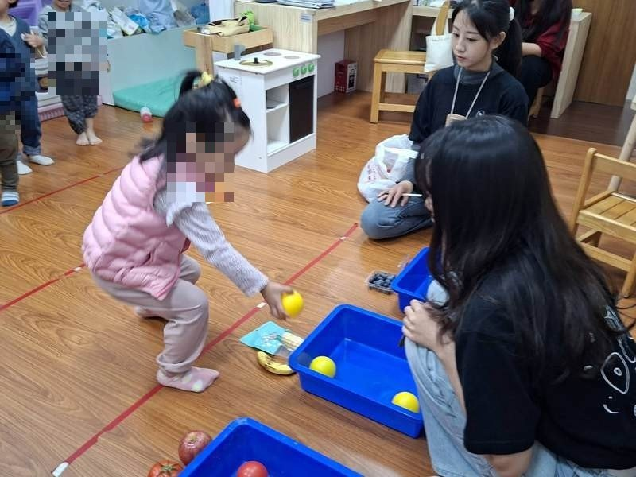
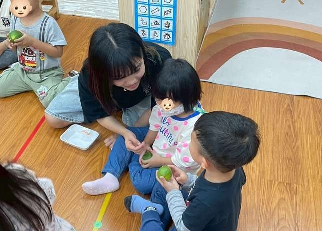
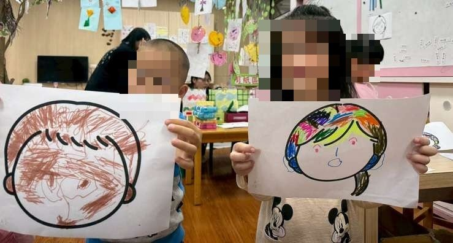
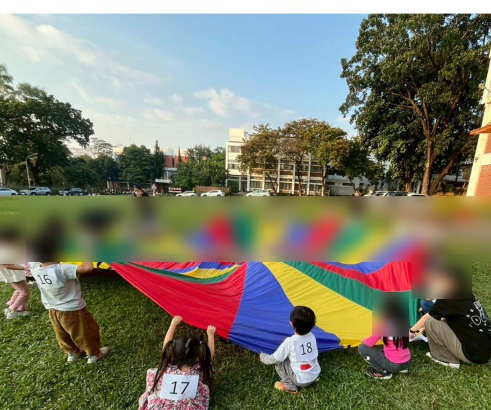
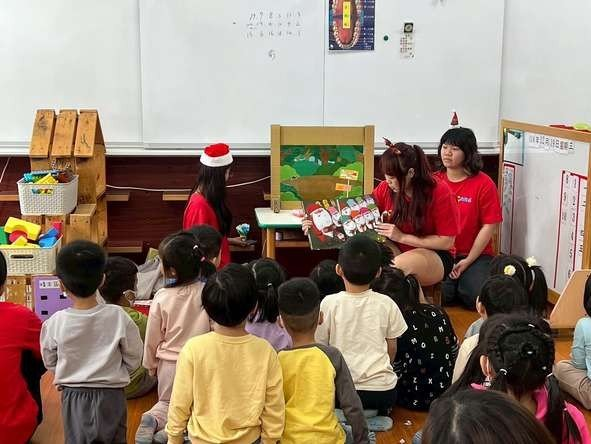

依孩子的年齡，或依你想用的評量工具找案例。

幼幼班（2–3歲）｜屏科大附設幼兒園
用繪本《小黃點》和玻璃紙觀察鏡帶 2–3 歲幼兒認識紅黃藍，再以蔬果配對遊戲深化，全程用團體檢核表記錄每位幼兒的辨色表現——並從評量結果發現了需要個別關注的孩子。

小班（3–4歲）｜屏科大附設幼兒園
以「水果」為主題的兩次試教：先用視嗅味觸四感認識檸檬與橘子，以口頭評量紀錄表蒐集幼兒的形容詞語料；再把水果特質轉成肢體動作，用自編粗大動作評定量表看動作發展程度。

中班（4–5歲）｜屏科大附設幼兒園
兩組接力的「自我概念」課程：第一組用動物五官圖卡、記憶翻翻卡和「畫出我的臉」帶幼兒覺察自己的外型；第二組以「我很特別」繪本與遊戲引導幼兒發現自己與他人的不同。評量同時使用評定量表、行為觀察紀錄與作品分析三種資料來源。

大班（5–6歲）｜屏科大附設幼兒園
兩場接力的冬至主題課程：第一場全班在戶外合力搖動氣球傘「煮湯圓」，用主題評量檢核表分組觀察 24 位幼兒的合作與大肌肉表現；第二場回到教室用黏土搓湯圓，以十項指標 × 四級程度的檢核表加作品雙軌記錄精細動作——同一主題，示範了兩種檢核表設計。

中大班混齡｜內埔國小附設幼兒園
以聖誕節為主題的學習區教學：偶台說演《100個聖誕老公公》後，幼兒自選圖書區（讀繪本畫聖誕）、藝術區（做聖誕花圈）或積木區（蓋聖誕小鎮）。評量以軼事記錄法為主軸，六份完整的三段式紀錄示範了開放情境怎麼評。